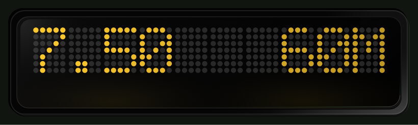

Ein zeitgemäßer Sprint umrechnen
Mit Distanz und Zeit starten. Für mehr Kontext können Sie Ihren Starttyp, Timingmethode, Unterfläche, Schuhwerk, Wind oder Höhenangabe hinzufügen.
Sprintzeitrechner
Hast du einen Sprint über 30 m, 60 m oder eine andere Distanz gestoppt? Gib Distanz und Zeit ein, um deine mögliche 100-m-Zeit zu berechnen. Gib für eine genauere Schätzung auch Startart, Zeitmessung und Laufbelag an.
Kein Wearable benötigt. Beginnen Sie mit einer Strecke und einer Zeit.

Verwenden Sie eine 100m-Schätzung, um kürzere Sprints auf eine gemeinsame Skala zu bringen und beobachten Sie, wie Ihre Leistungen im Laufe der Zeit verändern.
Mit Distanz und Zeit starten. Für mehr Kontext können Sie Ihren Starttyp, Timingmethode, Unterfläche, Schuhwerk, Wind oder Höhenangabe hinzufügen.
Finden Sie Ihre durchschnittliche Geschwindigkeit in mph oder km/h, dann setzen Sie dies in den Kontext mit einer Geschwindigkeitsscore, altersgerechten Vergleichen und teilbaren Ergebnissen.
Athleten rekrutieren, Ihre Relay-Team formen, Attribute entwickeln, persönliche Bestleistungen verfolgen, Leaderboards besteigen und Medaillen sammeln.
Geben Sie die Distanz und die Zeit ein, die Sie gemessen haben. Verwenden Sie den Einfachen Modus für eine schnelle Schätzung.
In Detailed mode, erzähle dem App, wie du begonnen hast und wie die Uhr ausgelöst wurde. Ein Fließstart gibt dir eine Laufschule, während ein Stellstart die Beschleunigung von Ruhe aus beinhaltet.
Verwende die Schätzung, um Sprints über verschiedene Strecken zu vergleichen und deinen Fortschritt zu verfolgen.

Rechenbeispiel: 60 m in 7,50 Sekunden ergeben eine geschätzte 100-m-Zeit von 11,64 Sekunden.
Wähle im Modus „Leichtathletik-Meeting“ die Option „Mannlich“ und gib 60 m und 7,50 Sekunden ein. Wähle einen Start aus dem Block, elektronische Zeitmessung, Spikes, eine trockene Kunststoffbahn und Windstille. Lass Alter und Höhenlage frei.
Die 11,64 Sekunden sind eine Prognose. Eine offizielle 100-m-Zeit setzt einen gestoppten 100-m-Lauf voraus.


Ein Weg, es zu nutzen
Bei einem 40-Yard-Sprint in 4,50 Sekunden beträgt das Durchschnittstempo 18,2 mph (29,3 km/h) über die gesamte Strecke. Der 40-Yard-Modus der App schätzt deine 100-m-Zeit anhand deiner Zeitmessung und Laufbedingungen.


Teile deinen Sprint
Speichere dein Sprintergebnis als transparenten Sticker und platziere ihn auf deinem eigenen Foto oder Video. Teile es in deiner Instagram-Story oder poste es auf TikTok. Du kannst das Ergebnis auch als separates Video speichern.

Squad-Rennen
Erstelle ein Relayspiel mit ergänzenden Stärken. Manage Form, scharfstellen Changeovers, behandle Rennbedingungen und finde out, ob deine vier bei der Stunde recht sind.
Bereit, когда du bereit bist
Bringe die Distanz und die Zeit deines nächsten Sprints mit.